Multimediedesigner
Nora
Akkileh
Multimediedesign
& AI Content Creation
Jeg skaber digitale oplevelser, hvor
design, kreativitet & AI mødes.
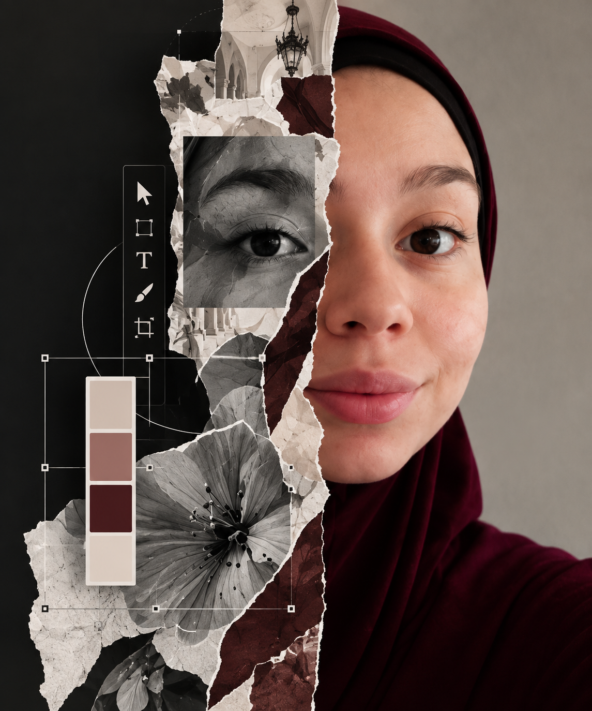
Case Studies
Udforsk mit arbejde
gennem værktøjerne jeg
bruger
IDEAS
INTO
REALITY
Hvert værktøj
fortæller en
historie
Klik på mig og se,
hvad jeg har skabt
Klik på et værktøj og se casen
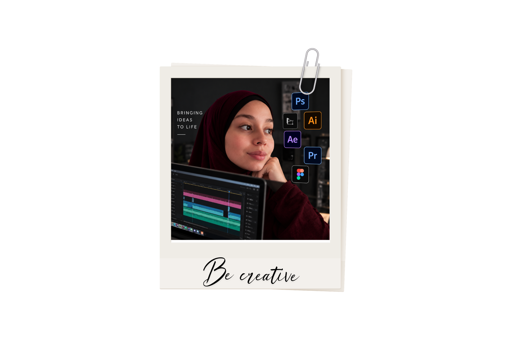
Adobe
After Effects
Lady Balance
Lady Balance ønskede at få sine produkter ud på apotekerne og gøre brandet mere synligt og tilgængeligt. Derfor udviklede jeg en kort reklamefilm, der viser produktet i en relevant apotekskontekst.
Adobe
Illustrator
Lady Balance
Fra idé til en stærkere identitet
Jeg redesignede Lady Balances eksisterende logo, fordi udtrykket ikke i tilstrækkelig grad talte til målgruppen. Målet var en mere moderne, feminin og genkendelig identitet, der skaber tillid.
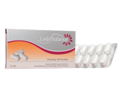
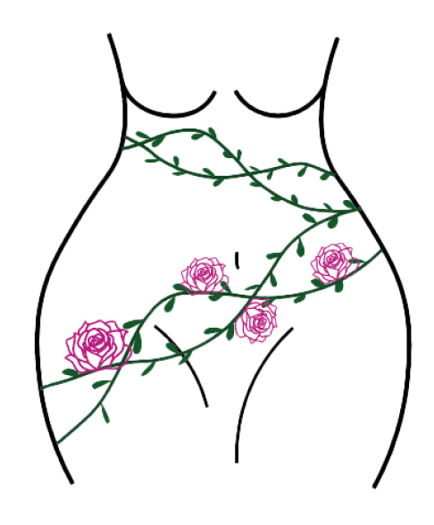
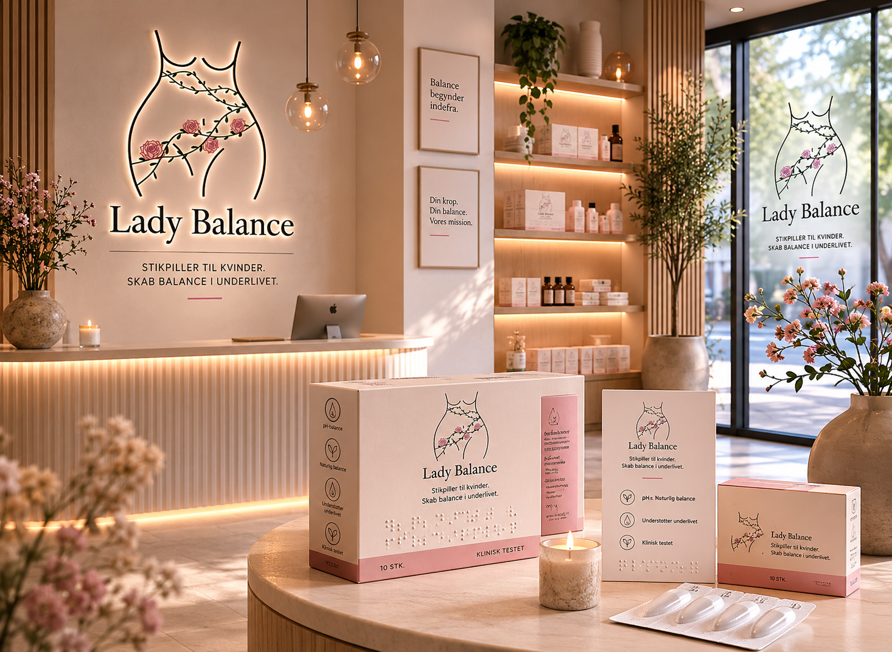
Adobe
Photoshop
Postermania
Som tidligere ejer af Postermania stod jeg for både design af plakater og deres visuelle præsentation. I Photoshop udviklede jeg realistiske mockups, så kunderne kunne se plakaterne i forskellige miljøer.
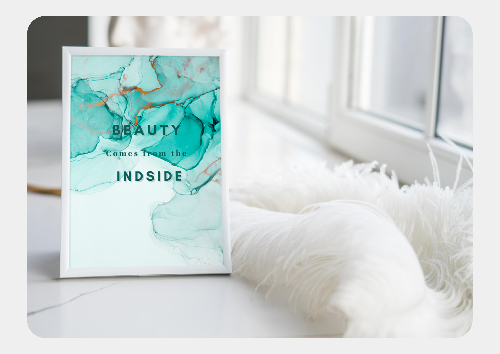
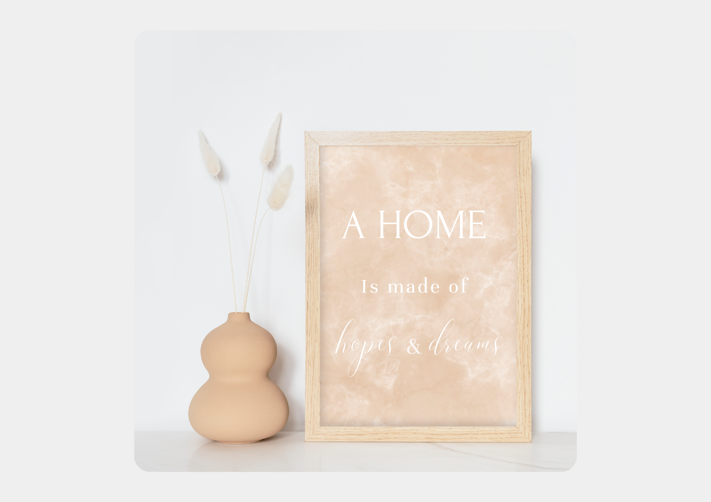
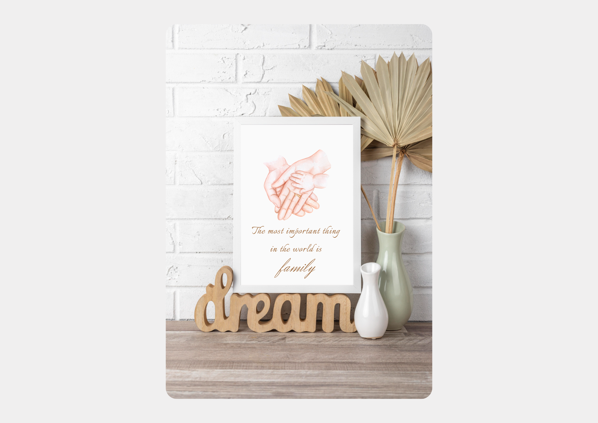
Adobe
InDesign
GLS
I samarbejde med GLS udviklede vi en AI Playbook, der guider medarbejderne i sikker brug af åben og lukket AI. Playbooken blev designet i InDesign med fokus på et overskueligt og brugervenligt udtryk.
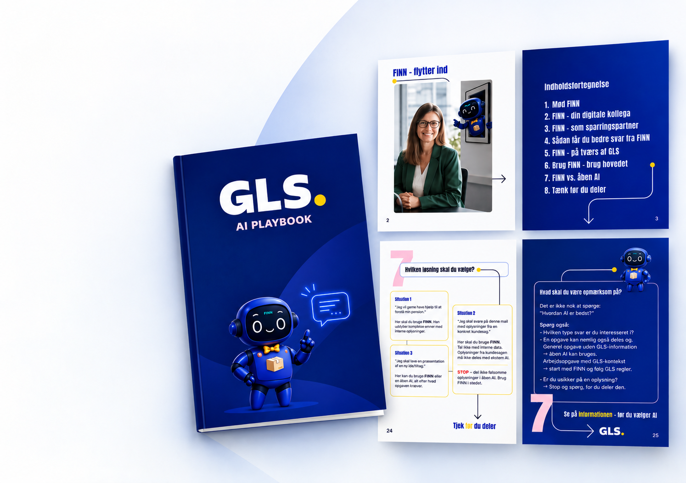
Figma
Lady Balance
I forbindelse med redesignet af Lady Balances hjemmeside udviklede vi en interaktiv prototype i Figma. Her testede vi struktur, navigation og brugeroplevelse, inden designet blev realiseret.
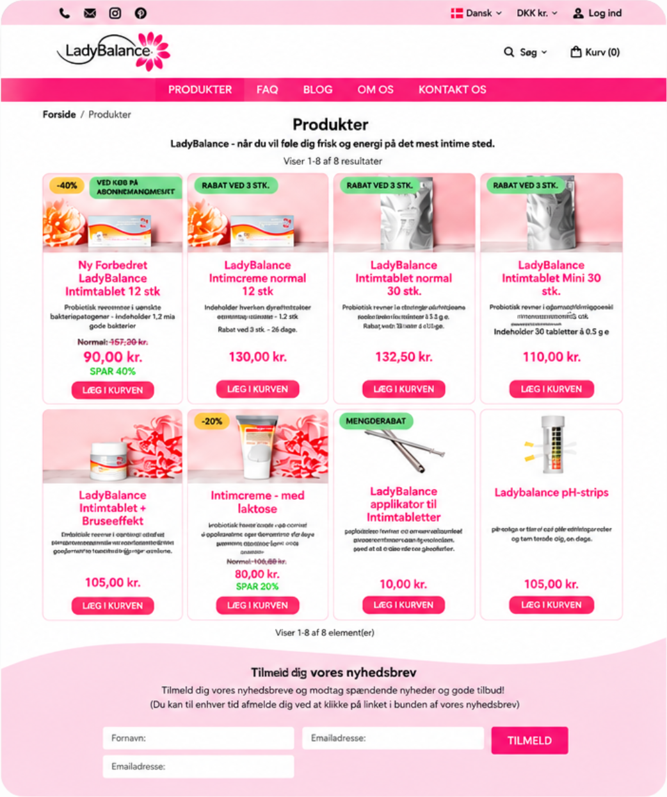
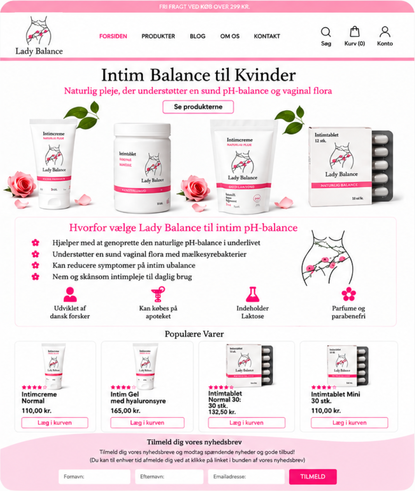
Adobe
Lightroom
I forbindelse med et logo- og brandingprojekt for en kunde fra UAE udviklede jeg en professionel og eksklusiv visuel identitet. I Lightroom arbejdede jeg med lys, farver og kontraster for at skabe en luksuriøs stil og en rød tråd mellem logo, billeder og brand.
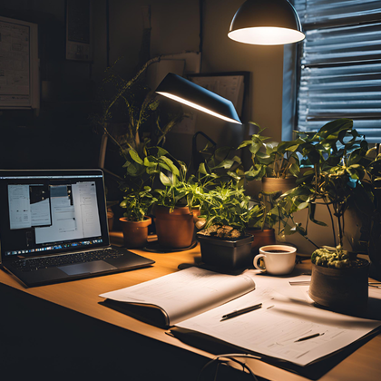
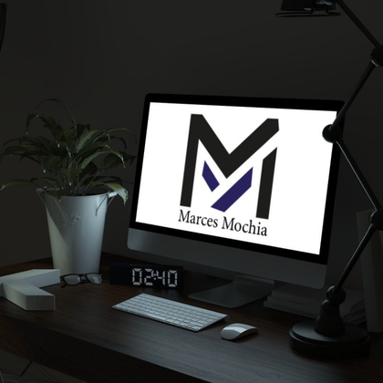
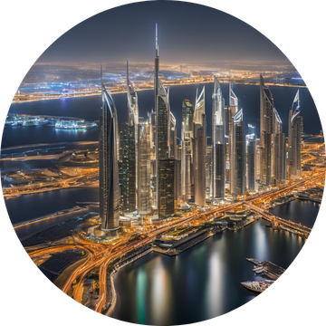
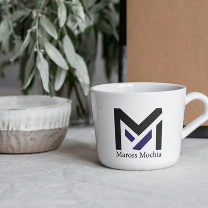
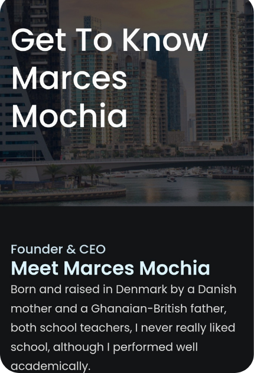
Om Mig
Jeg elsker at gøre idéer til virkelighed og skabe visuelle løsninger, der er gennemtænkte og skiller sig ud. Jeg er nysgerrig, detaljeorienteret og eksperimenterer, indtil idé og udtryk går op i en højere enhed.
Min arbejdsproces starter med at forstå mennesket bag behovet. Jeg undersøger, samler inspiration og udvikler idéer, før jeg skaber. Undervejs afprøver, justerer og forbedrer jeg løbende. Jeg bruger både designværktøjer og AI til at udforske muligheder, men de kreative valg er altid mine.
Jeg går op i detaljerne uden at miste helheden. En løsning skal ikke kun være flot – den skal have et formål, kommunikere tydeligt og have brugeren i fokus.
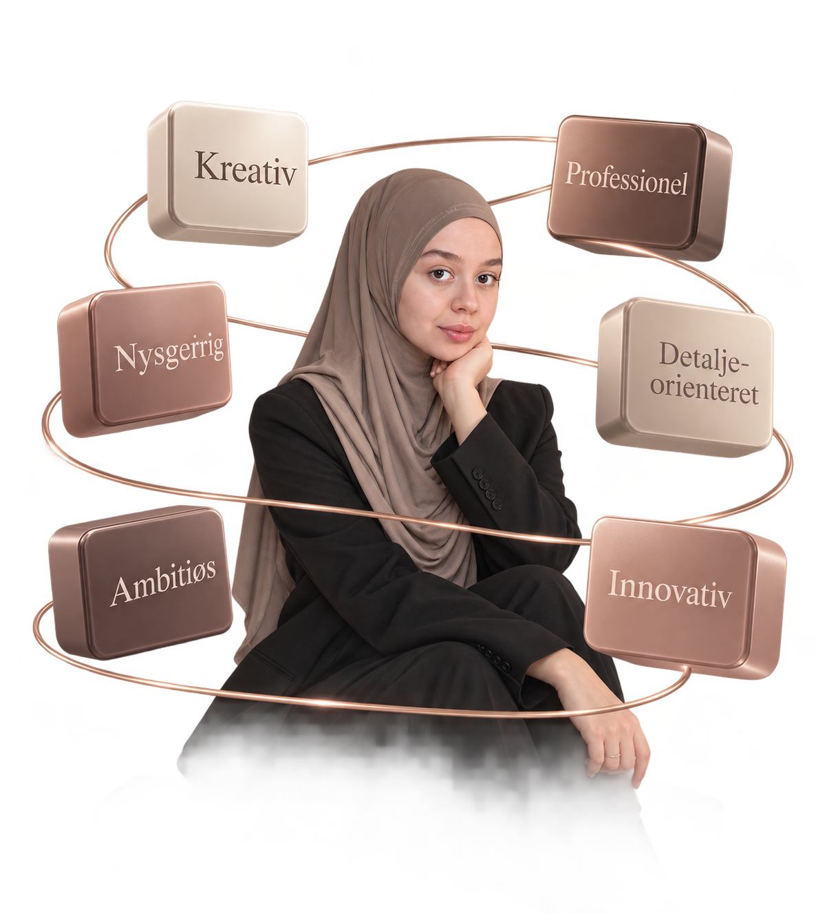